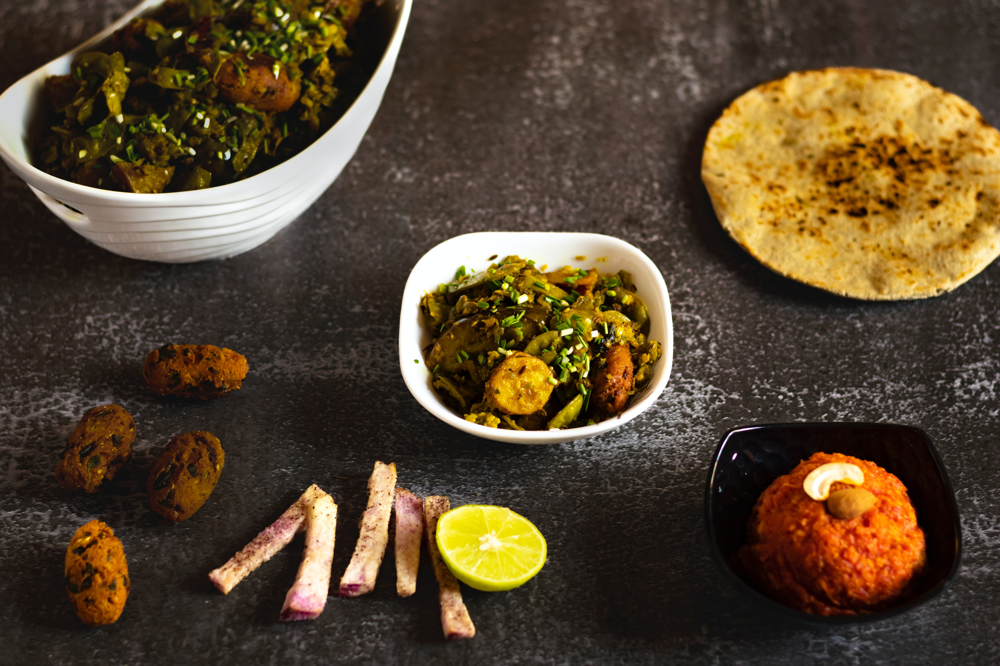

ગુજરાતી
પંજાબી
સાઉથ ઇન્ડિયન
બ્રેડ&બેકિંગ
ફરાળી
મીઠાઈ
ડ્રીન્કસ
નાસ્તા
About
Trending Now
ચણા ની દાળ ના મોદક બનાવવાની રીત | Chana ni daal na modak banavani rit | Chana ni daal na modak recipe in gujarati
Dessert&Sweets
ચણા ની દાળ ના મોદક બનાવવાની રીત | Chana ni daal na modak banavani rit |
Team Recipe in Gujarati
-
23/09/2023

Gujarati
ગુવાર નું શાક બનાવવાની રીત | guvar nu shaak banavani rit | guvar nu shaak recipe in gujarati
Gujarati
ઇન્દોરી ચટપટી ભીંડી બનાવવાની રીત | Indori Chatpati Bhindi banavani rit| Indori Chatpati Bhindi recipe in gujarati
Nasta
જગન્નાથ રથયાત્રા સ્પેશિયલ ખાજા બનાવવાની રીત | Jagannath Rathyatra Special Khaja banavani rit